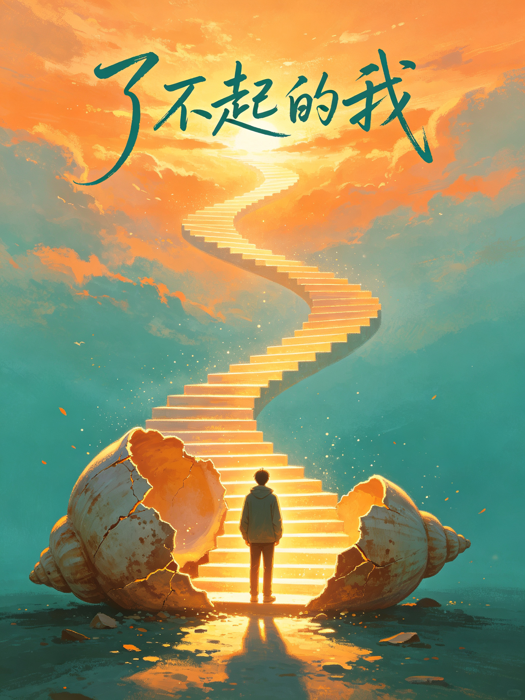

THE REMARKABLE ME · 陈海贤
了不起的我
陈海贤 著自我发展心理学浙大心理学博士豆瓣 9.0
你是不是也有这样的时刻：明明想改变，却总也动不了？陈海贤博士告诉你：改变从来不是因为懒，而是你心里有一套心理免疫系统在保护旧的自己。这本书不讲大道理，只给方法——小步子原理、课题分离、控制两分法。它只帮你做一件事：成为那个一直想成为的、了不起的自己。
🎮 本书包含 12 个互动体验：改变自测、心理免疫系统、舒适区识别、奇迹提问、看脚下小步子、思维切换、应该思维清理、课题分离、控制两分法、转折期渡河、人生地图、读后小测……读完你会明白：改变不是一场爆发，而是一小步一小步的积累。